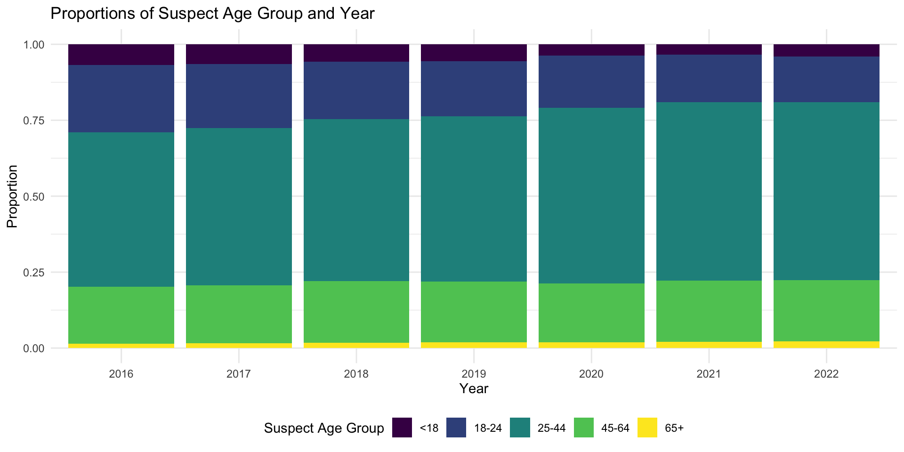

Suspect Analysis
In this section we would like to explore more about the crime
suspect’s features. We mainly focus on studying the “Felony Crimes”,
which includes:
“BURGLARY”, “FELONY ASSAULT”, “GRAND LARCENY”, “GRAND LARCENY OF MOTOR
VEHICLE”, “MURDER & NON-NEGL. MANSLAUGHTER”, “RAPE”, “ROBBERY” in
offense column
Visual Analysis
We will first use data visualization to give an overview of the distribution of suspect’s features.
Suspect Sex
complaint %>%
drop_na(offense, susp_sex) %>%
group_by(year, susp_sex) %>%
dplyr::summarize(n_obs = n()) %>%
group_by(year) %>%
dplyr::summarize(susp_sex, percentage = n_obs / sum(n_obs)) %>%
ggplot(aes(x = year, y = percentage, fill = susp_sex)) +
geom_bar(stat = 'identity') +
labs(
x = "Year",
y = "Proportion",
title = "Proportions of Felonies by Suspect Sex and Year",
fill = "Suspect Sex"
) According to the plot, most of the suspect’s sex(if recorded) is male,
female suspects appear to be much fewer than male suspect.
According to the plot, most of the suspect’s sex(if recorded) is male,
female suspects appear to be much fewer than male suspect.
And in 2020, the propotions of male suspect are even larger than other
years.
Suspect Race
complaint %>%
drop_na(offense, susp_race) %>%
group_by(year, susp_race) %>%
dplyr::summarize(n_obs = n()) %>%
group_by(year) %>%
dplyr::summarize(susp_race, percentage = n_obs / sum(n_obs)) %>%
ggplot(aes(x = year, y = percentage, fill = susp_race)) +
geom_bar(stat = 'identity') +
labs(
x = "Year",
y = "Proportion",
title = "Proportions of Felonies by Suspect Race and Year",
fill = "Suspect Race"
) Based on barplot, we can see that the most frequent suspect races are:
Black, White Hispanic and White, while Asian/Pacific Islander and
American Indian/Alaskan Native are the least freqeut races to be a
suspect.
Based on barplot, we can see that the most frequent suspect races are:
Black, White Hispanic and White, while Asian/Pacific Islander and
American Indian/Alaskan Native are the least freqeut races to be a
suspect.
Suspect Age Group
complaint %>%
drop_na(offense, susp_age_group) %>%
group_by(year, susp_age_group) %>%
dplyr::summarize(n_obs = n()) %>%
group_by(year) %>%
dplyr::summarize(susp_age_group, percentage = n_obs / sum(n_obs)) %>%
ggplot(aes(x = year, y = percentage, fill = susp_age_group)) +
geom_bar(stat = 'identity') +
labs(
x = "Year",
y = "Proportion",
title = "Proportions of Felonies by Suspect Age Group and Year",
fill = "Suspect Age Group"
)
According to the barplot, we can see that the age group between 25 and
44 years old takes up largest proportion in suspects, and the next is
18-24 years old.
Besides, with time going by, the proportion of age group between 25-64
years old are rising in suspects’ age distribution.
Statistical Testing
We use statistical tests to find if there is a difference in daily crime records of suspects from difference races.
Suspect Race
crimebyday_aspa = complaint %>%
group_by(year,month,day_of_week) %>%
filter(susp_race == "ASIAN / PACIFIC ISLANDER") %>%
dplyr::summarize(
n_bydate = n(),
) %>%
unique()
crimebyday_white = complaint %>%
group_by(year,month,day_of_week) %>%
filter(susp_race == "WHITE") %>%
dplyr::summarize(
n_bydate = n(),
) %>%
unique()
t.test(crimebyday_aspa$n_bydate,crimebyday_white$n_bydate)##
## Welch Two Sample t-test
##
## data: crimebyday_aspa$n_bydate and crimebyday_white$n_bydate
## t = -79.655, df = 749, p-value < 2.2e-16
## alternative hypothesis: true difference in means is not equal to 0
## 95 percent confidence interval:
## -265.2694 -252.5084
## sample estimates:
## mean of x mean of y
## 153.0494 411.9383According to the test results, we can find that there’s a significant difference between the suspect races.
Regression Modelling Analysis
We try to build models to give prediction of the criminal’s features based on other factors, and see if we can draw conclusions from the coefficients of the factors.
Suspect Sex
a <- list.files("./Data")
dir <- paste("./Data/",a,sep = "")
n <- length(dir)
merge_data <- read.csv(file = dir[1],header = T,sep =",")
merge_data <- cbind(dir[1], merge_data )
merge_data <- rename(merge_data, c("dir[1]" = "yyyymm"))
for (i in 2:7){
new.data <- read.csv(file = dir[i], header = T, sep = ",")
new.data <- cbind(dir[i], new.data)
new.data <- rename(new.data, c("dir[i]"="yyyymm"))
merge_data <- rbind(merge_data,new.data)
}# filter data with unknown
tidydata1 = merge_data %>%
na.omit() %>%
filter(!susp_sex == "U") %>%
filter(!susp_race == "UNKNOWN") %>%
filter(!susp_age_group == "UNKNOWN") %>%
filter(!vic_race == "UNKNOWN") %>%
filter(!vic_age_group == "UNKNOWN") %>%
separate(date,into = c("mon","day","year"),sep = "/") %>%
mutate(jurisdiction_code = as.numeric(jurisdiction_code)) %>%
mutate(susp_sex = ifelse(susp_sex == "M",1,0),vic_sex = ifelse(vic_sex == "M",1,0),jurisdiction_code=ifelse(jurisdiction_code >= 3,3,jurisdiction_code + 0)) %>%
mutate(jurisdiction_code=as.factor(jurisdiction_code)) %>%
mutate(covid_state=ifelse(year>=2020,1,0))
# When year >=2020, we assume the world is in a covid state.We build a logistic regression model to predict the suspect’s sex based on other factors.
mylogit <- glm(susp_sex ~ precinct
+ borough + jurisdiction_code+atpt_cptd
+level+susp_age_group +susp_race+vic_age_group
+vic_race+vic_sex+covid_state, data = tidydata1, family = "binomial")
mylogit %>%
broom::tidy() %>%
select(term, estimate, p.value)## # A tibble: 33 × 3
## term estimate p.value
## <chr> <dbl> <dbl>
## 1 (Intercept) 1.53 8.02e- 3
## 2 precinct -0.00347 4.29e- 22
## 3 boroughBRONX 0.468 4.13e- 1
## 4 boroughBROOKLYN 0.620 2.79e- 1
## 5 boroughMANHATTAN 0.459 4.23e- 1
## 6 boroughQUEENS 0.743 1.94e- 1
## 7 boroughSTATEN ISLAND 0.628 2.73e- 1
## 8 jurisdiction_code1 0.678 6.07e-206
## 9 jurisdiction_code2 -0.153 1.73e- 86
## 10 jurisdiction_code3 -0.0470 1.35e- 1
## # … with 23 more rowsFor backward stepwise, in order to select variables.
step(mylogit, direction = 'backward')## Start: AIC=986315.5
## susp_sex ~ precinct + borough + jurisdiction_code + atpt_cptd +
## level + susp_age_group + susp_race + vic_age_group + vic_race +
## vic_sex + covid_state
##
## Df Deviance AIC
## <none> 986249 986315
## - precinct 1 986343 986407
## - atpt_cptd 1 986402 986466
## - covid_state 1 986506 986570
## - borough 5 986589 986645
## - susp_race 5 986947 987003
## - jurisdiction_code 3 987798 987858
## - vic_age_group 4 987952 988010
## - susp_age_group 4 987986 988044
## - vic_sex 1 988688 988752
## - vic_race 5 992110 992166
## - level 2 998154 998216##
## Call: glm(formula = susp_sex ~ precinct + borough + jurisdiction_code +
## atpt_cptd + level + susp_age_group + susp_race + vic_age_group +
## vic_race + vic_sex + covid_state, family = "binomial", data = tidydata1)
##
## Coefficients:
## (Intercept) precinct
## 1.525072 -0.003474
## boroughBRONX boroughBROOKLYN
## 0.468241 0.619915
## boroughMANHATTAN boroughQUEENS
## 0.458813 0.743427
## boroughSTATEN ISLAND jurisdiction_code1
## 0.627991 0.677619
## jurisdiction_code2 jurisdiction_code3
## -0.152851 -0.046952
## atpt_cptdCOMPLETED levelMISDEMEANOR
## -0.275581 -0.384118
## levelVIOLATION susp_age_group18-24
## -0.747449 0.059370
## susp_age_group25-44 susp_age_group45-64
## 0.259121 0.355220
## susp_age_group65+ susp_raceASIAN / PACIFIC ISLANDER
## 0.322764 -0.227803
## susp_raceBLACK susp_raceBLACK HISPANIC
## -0.149805 -0.091082
## susp_raceWHITE susp_raceWHITE HISPANIC
## -0.304785 -0.296770
## vic_age_group18-24 vic_age_group25-44
## 0.391673 0.276877
## vic_age_group45-64 vic_age_group65+
## 0.190445 0.005028
## vic_raceASIAN / PACIFIC ISLANDER vic_raceBLACK
## 0.094760 -0.581278
## vic_raceBLACK HISPANIC vic_raceWHITE
## -0.375859 -0.072595
## vic_raceWHITE HISPANIC vic_sex
## -0.181335 -0.258387
## covid_state
## 0.081495
##
## Degrees of Freedom: 891833 Total (i.e. Null); 891801 Residual
## Null Deviance: 1015000
## Residual Deviance: 986200 AIC: 986300Through backward, we found that we need all the variables.
We see the output of the model.
tidydata1 %>%
modelr::add_residuals(mylogit) %>%
ggplot(aes(x = susp_age_group, y = resid)) + geom_violin() + facet_wrap(~covid_state)